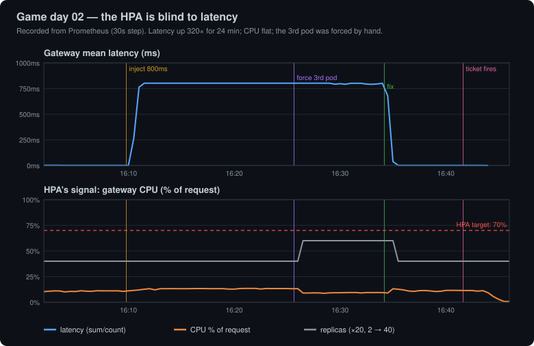

Game day 02 · headline
Latency up 320× — and the autoscaler wanted to scale in
800ms injected into every gateway request for 24 minutes. The HPA's CPU signal moved from 12% to 15% of a 70% target; replicas stayed at 2.
Its status read TooFewReplicas: the desired replica count is less than the minimum. Waiting isn't work, so CPU-based autoscaling sees a slow service as an idle one. A forced extra pod then got 0% of in-cluster traffic: a Service balances connections, not requests.